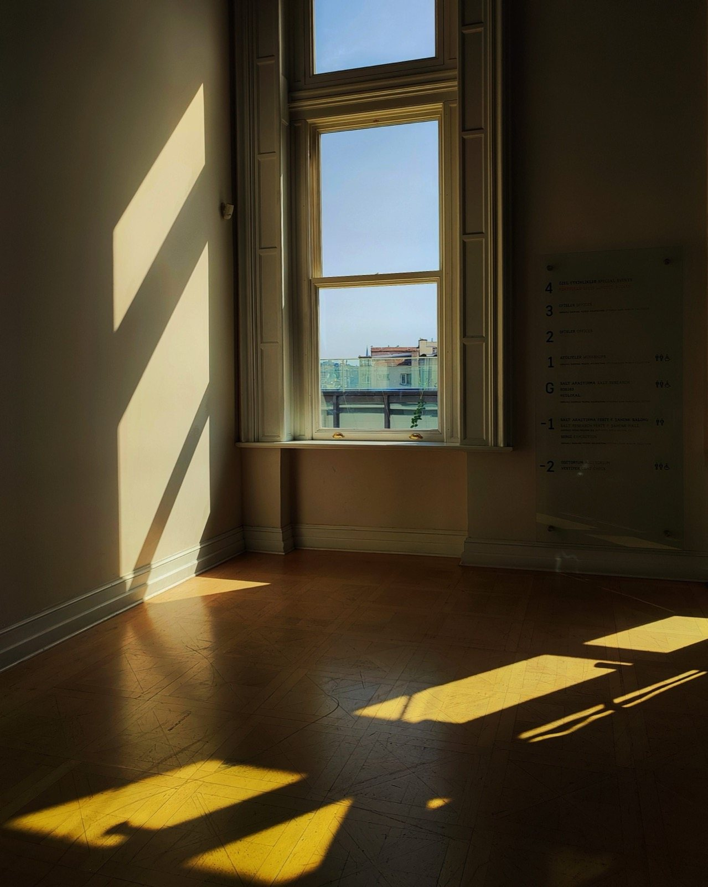
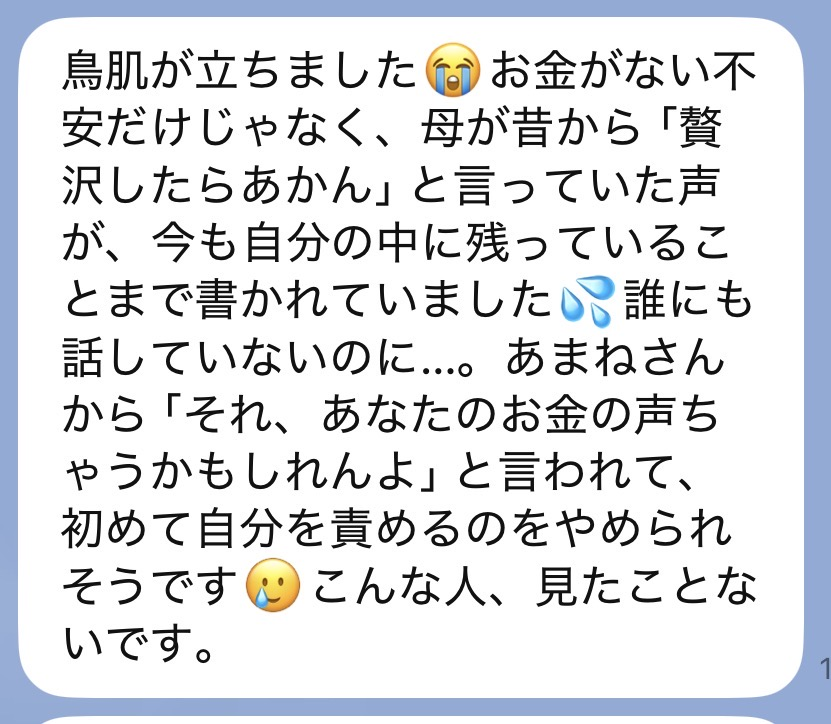
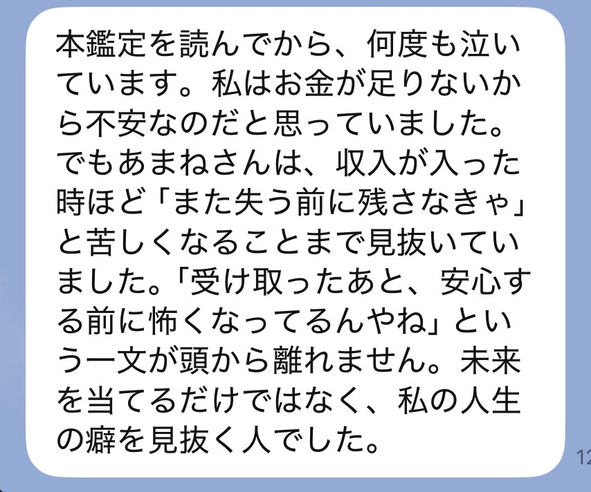
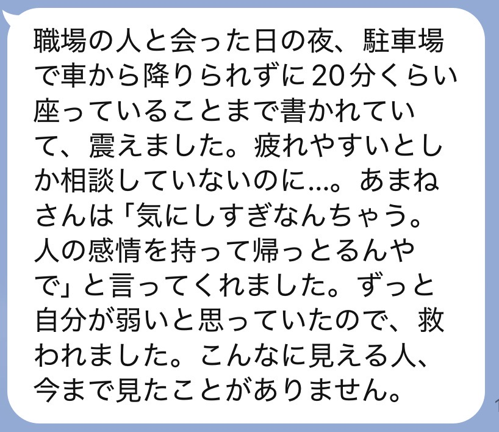
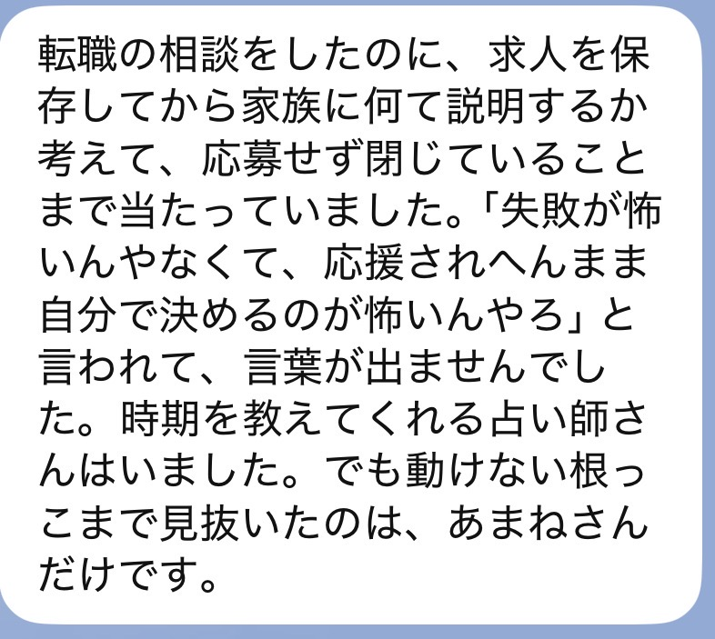
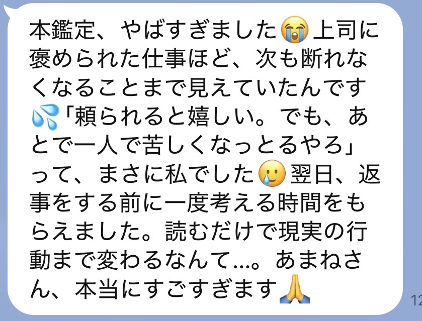
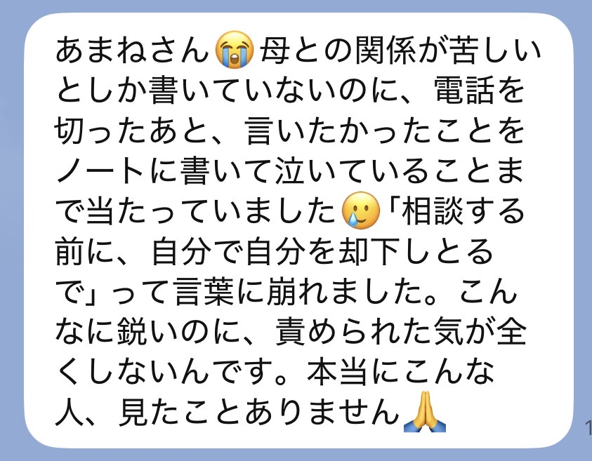
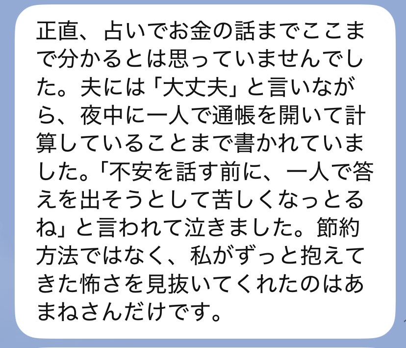
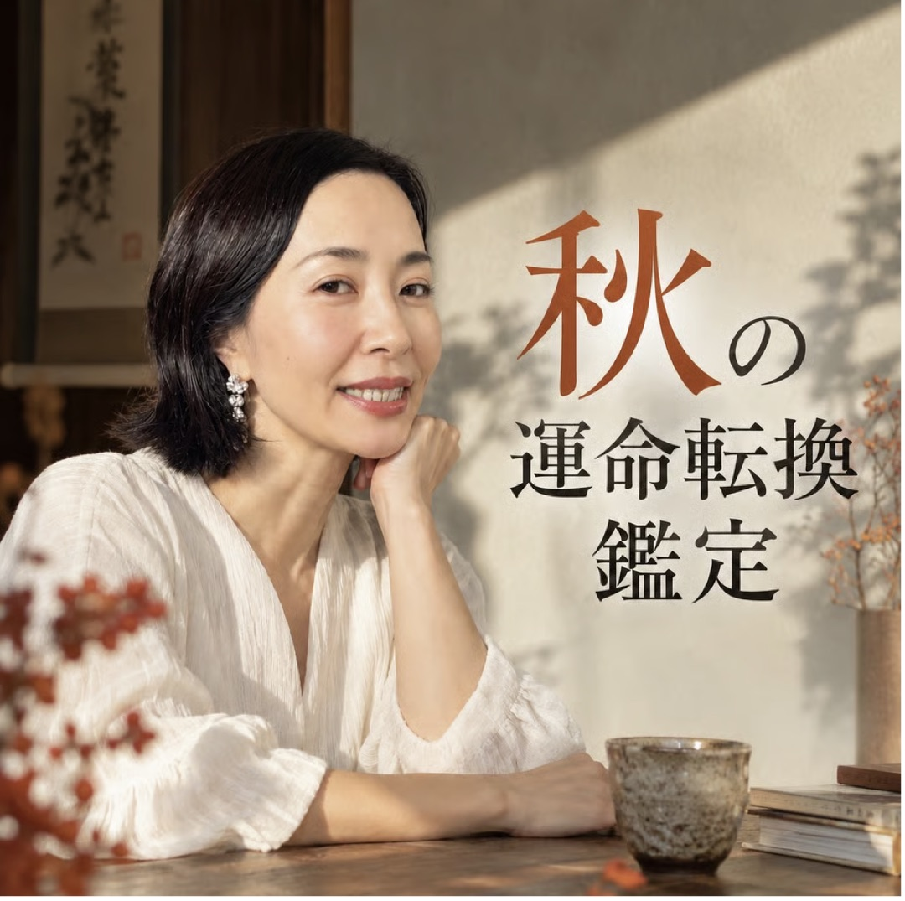

霜月 運命転換鑑定
今年の分は、
今年のうちに
抜いていき
無料鑑定を受け取ったあんたへ
SCROLL
このページは有料の本鑑定のご案内です。
あの鑑定を読んでる途中、どこかで手ぇ止まらんかった？
「なんで分かんの」って、ちょっとゾッとした。
「あ、それや」って、認めたくないのに認めた。
ほんで少しだけ、泣きそうになった。
ほんで、今が11月っていうのにも意味がある。
木が葉っぱを落とすんは、枯れたからちゃう。
次の春までに、要らんもんを手放してるだけや。
人も同じやねん。
11月は、刺さってた念がいちばん抜けやすい時期や。
一年ぶん溜め込んだもんが、ゆるむ季節やからな。
手が止まった場所は、
あんたがずっと
一人で我慢してた場所。
ゾッとした場所は、
誰かの念か、古い言葉が
刺さったままの場所や。
「怖いけど、分かる」と思ったとこ。
そこはもう、あんたが自分を守り始めてる証拠やで。
先に言うとくな。
私は「ほら当たったやろ、すごいやろ」がしたいんちゃう。
怖いこと言うて、言うこと聞かせたいんでもない。
私が届けたいんは、あんたを守るための本当のことや。
あんたは弱いんちゃう。
反応してくれそうな優しい人やから、寄ってこられてるだけや。
守り方を、誰にも教えてもらえへんかっただけやねん。
職場の「普通はこうやろ」の人。既読のまま返事が来ん相手。母親の口ぐせ。
相談の入口は違っても、視てるのは同じ根っこや。
無料鑑定で伝えたんは、今あんたに何が刺さってるか。そこまでや。
それだけでも、肩が軽なった人は多い。
でもな、正直に言うで。
「軽なったのに、なんでまた戻んねん」
そう思った日、あったやろ。
逆に、無料鑑定がピンと来んかった人。それも同じや。
表層しか視てへんから、まだ刺さってる場所に届いてへんだけやねん。
「自分が何をしたいんか分からん」——そう書く人も、ほんまに多い。
それも、誰かの念があんたの声を上書きしてるだけや。
当たってた。
肩が軽なった。
ちょっと泣いた。
そこで終わったら、三日後、また同じ人に、同じ顔で振り回されてる。
刺さってる念を見つけただけで、刺さる仕組みはまだ変わってへんからや。
無料鑑定は、
「刺さってるで」と教えるもん。
今回の鑑定は、
年内に抜いて、自分を守るための
守り方を渡すもんや。
毎年、年末が近づいたらこう思わへん？
「今年も、何も変わらんかったな」
ほんで年が明けて、また同じこと考える。
その繰り返しに心当たりある人、めっちゃ多いで。
切れんかった関係。
言えんかった一言。
「私さえ我慢したら」で飲み込んだ夜。
それ抱えたまま年越したら、来年も同じ重さで始まんねん。
11月のうちに視とく意味は、そこや。
年内に抜けるもんと、来年に回すもん。
その線引きがいちばんしやすいんが、この季節なんよ。
「またお金使って、何も変わらんかったらどうしよ」
うん、その気持ちは正しい。
お金払ってまで視てもらうんは、ちょっと怖いもんな。

それな、弱いからちゃうで。
何回も期待して、何回も自分を責めてきたからや。
急かさへん。
ただ、せっかく見つかった「刺さってる場所」を、
また日常に埋めてほしくないだけやねん。
一人ずつ、ちゃんと視る。
視るんは、今年のあんたの、いちばん深いとこや。
今起きてることだけやなく、なんであんたがそれを引き寄せるんかを、魂の深いとこから視る。
同じ場所で何回もつまずいてる自覚がある人ほど、この時期はすっきり整理できる流れが出てるで。
霜月 運命転換鑑定を受け取るご案内価格 9,980円鑑定は、一人ずつ
視て、書いてる。
せやから、11月のうちに
受けられる数に限りがあんねん。
今の状況を、そのままLINEに送って。
この鑑定が合うかどうか、私が返すわ。

名前と、購入画面のスクショをLINEに送って。ここで一回、私が確認するで。
ここがいちばん大事なとこ。
今いちばんしんどい瞬間。認めるんが怖かったこと。夜にふっと出てくる気持ち。
上手に書かんでええ。思いついたままの言葉で大丈夫や。
もろた言葉を一つずつ受け取りながら、なんで今この流れが来てんのかを視ていく。
ここに時間かけたいから、約3〜5日もらってる。
読み終わったあと、そのまま置いとける長さで書く。何回でも読み返してな。
届いたLINEを、そのまま載せてるで。







今、生活がしんどくて、このお金を出すために何かを削らなあかん人。
今回は、見送ってな。
家族がおる人は、一回相談してから決めてや。
暮らしを削ってまで受けるもんちゃう。
無料鑑定で伝えたことを、何回でも読み返して。あれは本当のことや。
状況が変わった時に、また来たらええ。
その時、私はここにおるから。

私も昔、この力のせいでいじめられてた。
相手の寂しさまで視えてしもて、それでも傷ついた。
誰にも言えんと泣いてた時、神社の鈴の音だけがやけにはっきり聞こえてな。
「視えるんやったら、責めるためやなく、守るために使い」
そう受け取ったんが、私の原点や。
せやから私の鑑定は、当てるより守る。
怖がらせたいんちゃう。これ以上あんたが自分を責めんでええように、本当のことを言うてる。
あの鑑定で視えたもんの奥が、まだ残ってる。
11月は、年末へ向けて抜けやすい季節や。
あんたがこの時期にここまで来たこと自体に、意味があんねん。